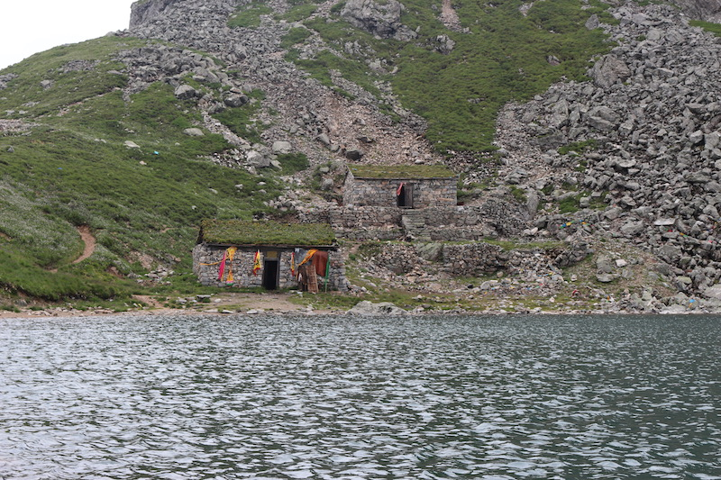

TravelNote-fst
TaiBai Spectacle
睡醒了 已经11点了 (￣.￣)
上篇是我们第一天的行程，如果你想把整个太白山都玩一遍的话，一定要计划至少两天时间（我是永远不会告诉你们，我们第二天是“跑”完的（￣︶￣）↗）
是时候来张导游图咯
天啊，刚百度了一堆景区路线图。突然发现我们上次去就玩一丢丢景点，是时候准备一波新征程咯 (～￣▽￣)～。我们是从梅县西安方向登山滴，如图
其中蓝色就是这条线路上可以住宿的地方（依稀记得一个床铺60一晚，当然是非节假期咯），红色的就是我们的登山路线。
重要提示
我们第一天从登山口到天圆地方，这一段属于太白山旅游景区，从住宿的文公庙往后属于太白山自然保护区。有人肯定想问，有什么区别啊？傻啊，动脑子想想，自然保护区更加原生态啊，就是说更需要注意安全，不是我危言耸听，自己看图
你走的路是这样滴
向下看是这样滴
总而言之，安全第一
出发 （￣︶￣）↗
相比于第一天来说，第二天的行程以远和险著称（加上第一天晚上下了点小雨），但是第二天登山海拔的跃升仅有500米左右，不要太高兴。
哦哟，捕获一只女汉子 (￣▽￣)
作为一只臭屌丝加程序攻城狮，一定要保持一颗奉献青春于祖国的繁荣富强的心。
天啊，我怎么这样了。回归正题。
从文公庙到小文公庙大概10公里，加油啊，亲。途中，如果一朵云飘过来，就会使这个样紫
路上兴许你会碰到一些“山民”和 (￣▽￣)”
天啊，我还年轻，反正我是不敢骑。
到了小文公庙，海拔大概就到3500米左右咯，期间路大部分是那样。
从小文公庙出发，前往大爷海，要翻越两座山头。
也不晓得是庙里的人，还是登山的亲们喜欢把石头堆成这样的小人状。
还有一些爱好者在这里采集一些什么东东，我也不晓得╮(￣▽￣)╭
难道是传说中的太白仙草
再次捕获两只妹纸
和一只帅哥(～￣▽￣)～
现在已经是海拔3600左右的位置了，山上风有一丢丢大，被一个呆比骗着说穿个短裤就好，结果我们的着装就是这么奇葩，棉袄+短裤
并且一朵云飘过来，就如同身处冰箱中一般。前一秒还是被太阳晒得炙热，后一秒就被冻得不要不要的。路漫漫其修远兮….
终于

哈哈哈哈，大爷海。真的很难想象，在如此高海拔的山头竟然还有海。
不得不说，海水真的非常甜。（￣︶￣）↗
这里离目的地拔仙台已经很近啦。稍作休息，继续努力。
看，那边那个是二爷海
爬个20来分钟，终于到山顶草甸了，风真的蛮大的
远处那个，就是它——拔仙台
迫不及待的冲过去 （￣︶￣）/
哒哒哒哒哒哒，目的地 海拔3771米的拔仙台
这一路真是累死了。赶紧休息下。
不过拔仙台这里风真的非常非常大，周围全是云，犹如身处险境一般。
目的地是拔仙台的小伙伴们，一定要多穿点暖和的方便运动登山的衣服。
Tips
水不要带太多，一人1000mL足矣，除非你想带上来卖(￣.￣)
当云经过时，视线非常不好，这段时间里尽量休息，不要前行。
带点创可贴什么的，以备不时之需。
最后在附一张“摄影师”的帅照
就是不给正脸，你打我啊 (￣▽￣)”
还有什么问题，可以给我发邮箱或者Q我 1300142414@qq.com